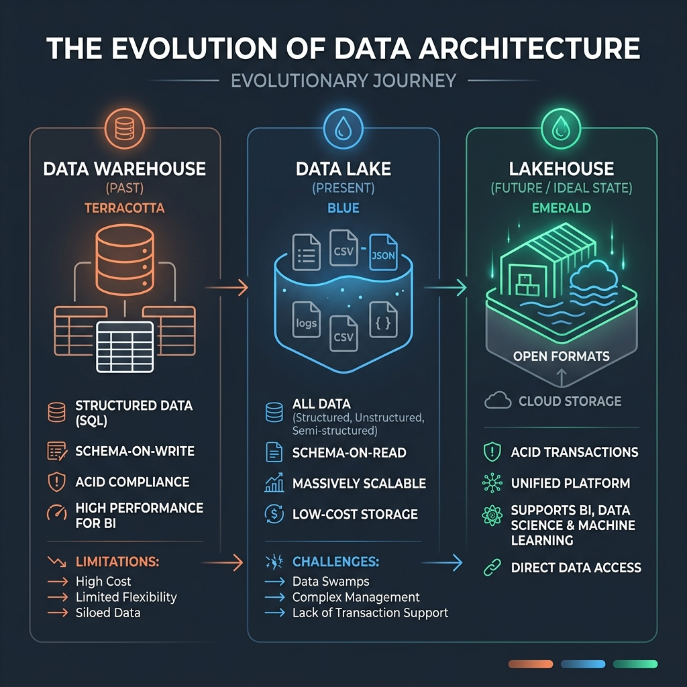
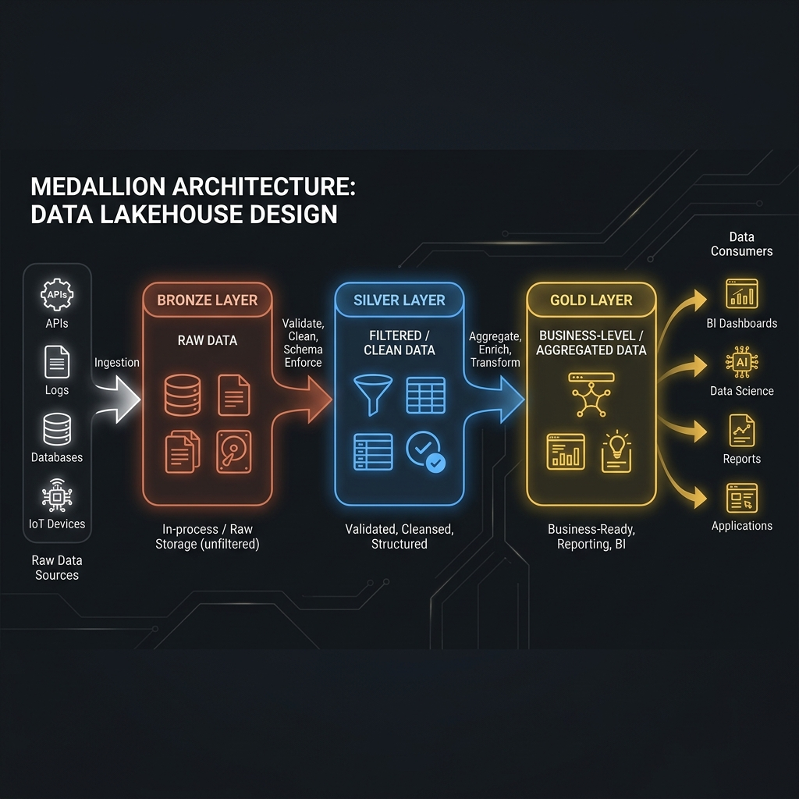

1From Data Warehouses to Lakehouses
The evolutionary journey of data storage and processing
As organizations collect more data, the systems used to store, query, and aggregate this data have evolved significantly. Over the last few decades, we've transitioned from strict, structured storage to flexible, massive-scale systems, finally arriving at a hybrid model known as the Data Lakehouse.

1. Data Warehouses
Data warehouses are purpose-built to aggregate and process large amounts of structured data quickly. They rely on relational databases to provide strong transaction protections and include management features like backup, recovery, indexes, and partitioning.
Definition
ACID Transactions: A set of properties (Atomicity, Consistency, Isolation, Durability) that guarantee database transactions are processed reliably. This ensures data integrity and consistency, which is crucial for business applications.
Limitation
While highly robust for BI (Business Intelligence), data warehouses are often hard to scale for large volumes, high velocity, or a variety of unstructured analytics (like machine learning). They historically required expensive vertical scaling rather than horizontal distribution.
2. Data Lakes
Data lakes emerged to handle the "Big Data" explosion—an internet-scale volume, velocity, and variety of data. They are highly scalable storage repositories (like HDFS, Amazon S3, Azure ADLS) that hold raw data in its native format (structured, semi-structured, and unstructured) until needed. They use commodity hardware to scale out workloads across multiple nodes.
BASE Model vs ACID
Unlike warehouses, data lakes traditionally follow the
BASE model (Basically Available, Soft-state, Eventually consistent). While they allow storing anything flexibly, the lack of ACID guarantees makes them an unreliable form of data storage. A processing failure mid-write leaves the storage in an inconsistent state with orphaned files, leading to corrupted analytics and "data swamps".
3. Data Lakehouses
To fix the reliability issues of Data Lakes while maintaining their scale, the Data Lakehouse was born. It merges the scalability and flexibility of data lakes with the management features and performance optimization of data warehouses.
Definition
Data Lakehouse: A unified data management architecture that eliminates disjointed systems by bringing ACID transactions, metadata management, and Data Warehouse performance directly to the low-cost object storage of Data Lakes.
Open-source formats like Delta Lake, Apache Iceberg, and Apache Hudi are the foundation of this architecture. They add a transactional metadata log on top of raw Parquet files.
Key Features of Delta Lake
Why Lakehouses Work
- ACID Transactions: Multiple concurrent readers and writers can access data without conflict. If a job fails, the transaction log rolls it back completely.
- Time Travel: The transaction log retains previous versions of data, allowing you to query historical snapshots for audits or recovery.
- Unified Batch & Streaming: Allows using the exact same APIs and logic for both batch processing and real-time streaming data.
- Schema Evolution/Enforcement: Prevents bad data from corrupting the table by enforcing schemas on write, while allowing schemas to evolve when business needs change.
Key Takeaways
- Data Warehouses: Great for structured BI and ACID, but expensive and rigid.
- Data Lakes: Scalable and flexible for all data types (ML/AI), but unreliable (BASE model) and prone to swamps.
- Lakehouses: The sweet spot. Unifies BI, ML, and Streaming on a single platform using transaction logs (like Delta) over object storage.
2The Medallion Architecture
Progressively refining data through logical layers
With the Lakehouse providing a unified storage platform, organizations need a design pattern to logically organize their data pipelines. The Medallion Architecture utilizes three layers—Bronze, Silver, and Gold—to progressively refine datasets from raw ingestion to business-ready insights.

It is crucial to think of these layers as logical, not strictly physical. A single logical layer might span across several physical storage zones depending on the complexity of the data sources.
1. Bronze Layer (Raw Copies)
The Bronze layer acts as the landing zone for raw data collected from various sources. Data is stored in its original structure without transformations.
- Immutable: Data here is treated as read-only. This serves as an absolute historical record and the single source of truth.
- Historization: You capture iterative changes over time here (e.g., appending new files), but you do not build fully processed SCD2 (Slowly Changing Dimension Type 2) tables here.
- Schema-on-Read: Often applied here to maximize ingestion flexibility, though some basic technical validation checks (format, completeness) are applied to catch massive errors early.
Common Mistake
Do not apply complex business rules, updates, or merges to data in the Bronze layer. If the data is altered from its source state, you lose the ability to replay your pipelines or audit the raw source if downstream bugs are discovered.
2. Silver Layer (Filtered, Clean, Augmented)
The Silver layer refines, cleanses, and standardizes the raw data. It acts as an "enterprise view" of all key business entities and transactions.
- Cleaning Activities: Removing noise, handling missing values, removing duplicates, trimming spaces, correcting types, and standardizing formats (e.g., date formats, naming conventions).
- Source-Aligned: Data is still granular and closely aligned with the source system. It is generally not recommended to prematurely cross-join different source systems here, as it tightly couples domains together.
- Schema-on-Write: Typically enforced here using formats like Delta Lake to ensure data quality before it proceeds.
3. Gold Layer (Modeled for Consumption)
The Gold layer delivers refined data optimized for specific business insights, reporting, and decision making. Data is aggregated, summarized, and enriched.
There are two popular data modeling techniques used in the Gold layer:
| Modeling Approach |
Description |
Pros & Cons |
| Star Schema (Kimball) |
A central Fact Table (quantitative data like sales) surrounded by Dimension Tables (context like time, location, customer). Uses Surrogate Keys to track history (SCDs). |
Excellent for complex slicing/dicing in BI and historical tracking. Labor-intensive to build and maintain. |
| One-Big-Table (OBT) |
All relevant data is consolidated into a single, massive, denormalized table. No complex joins required. |
Extremely fast for simple queries and loved by ML data scientists. Can lead to massive data duplication and complex nested fields. |
Key Takeaways
- Bronze = Raw: Immutable landing zone, historical archive, schema-on-read.
- Silver = Clean: Filtered, standardized, deduplicated, schema-on-write. Aligned to source.
- Gold = Curated: Aggregated, enriched, and modeled (Star Schema or OBT). Optimized for BI, dashboards, and ML.